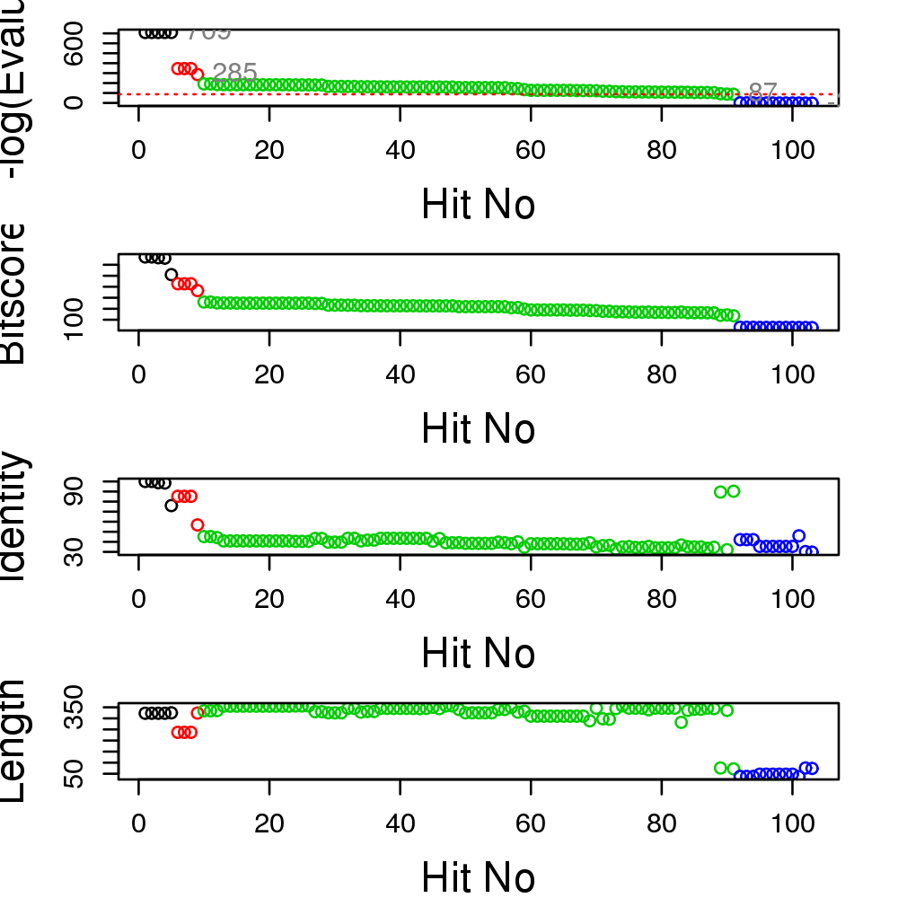
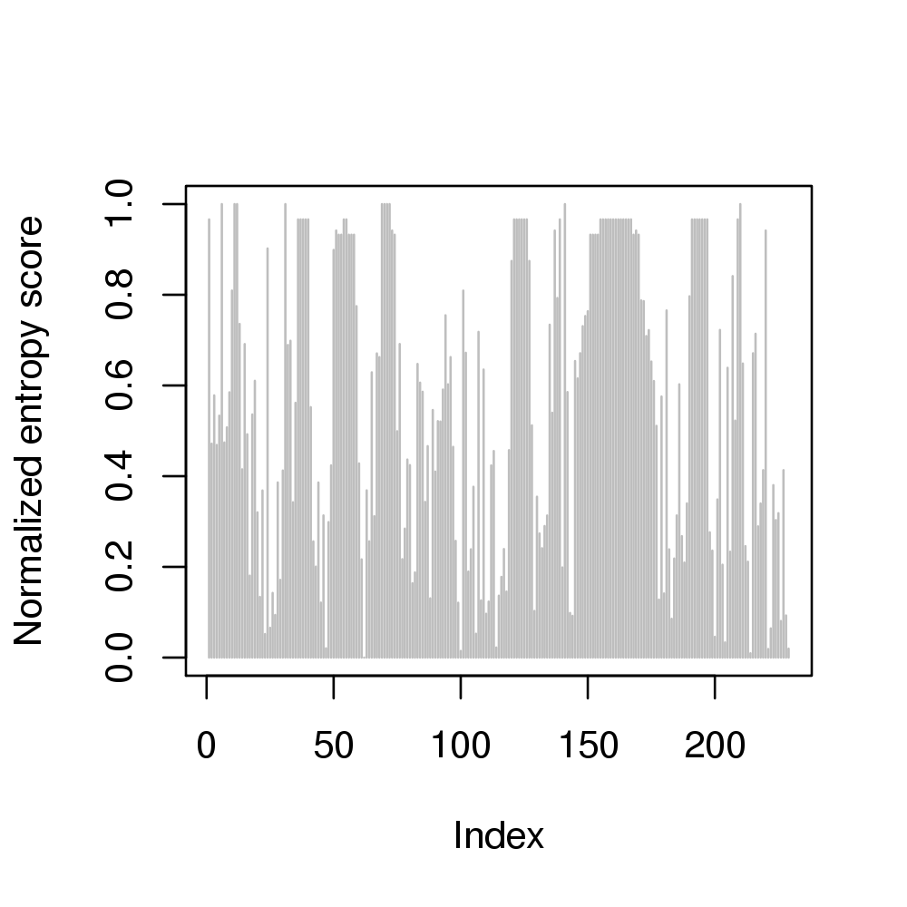
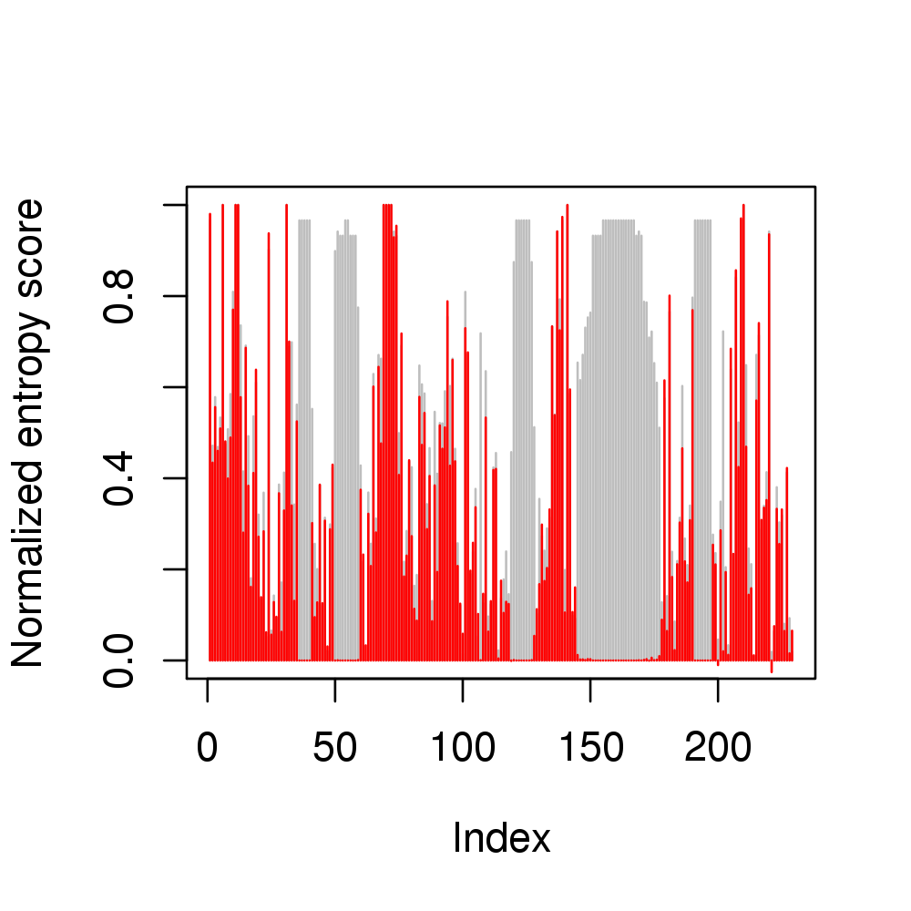
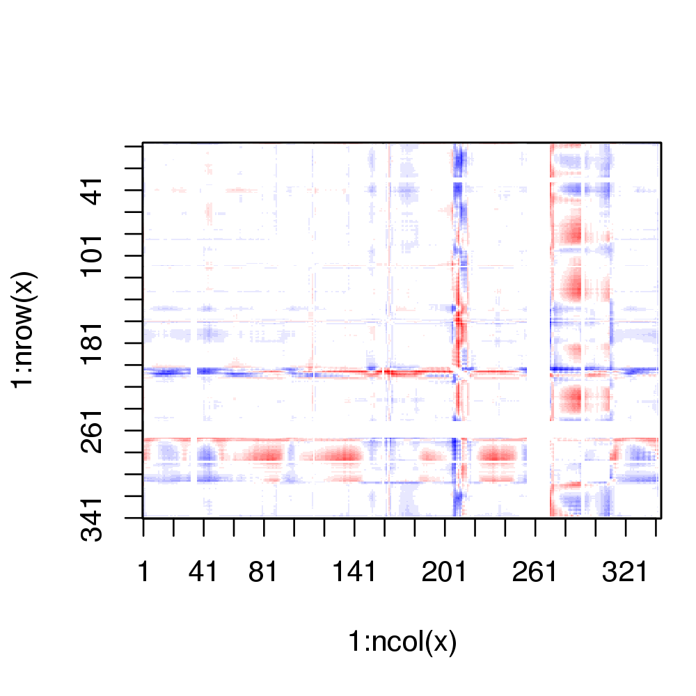
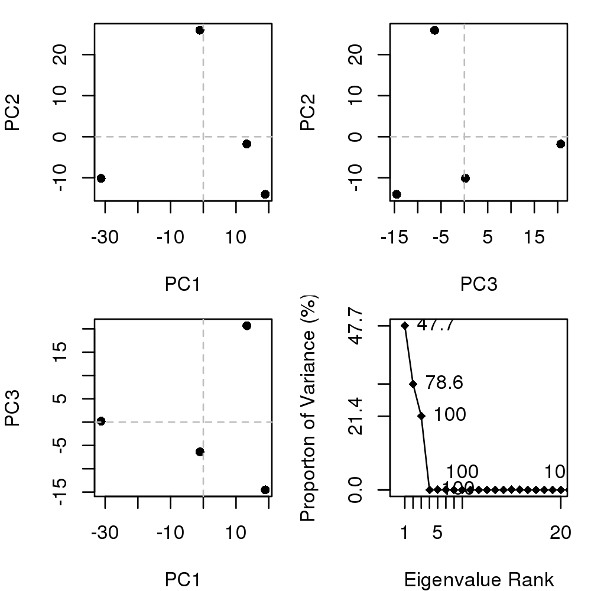

Biological Structure Analysis
Description
Utilities for the analysis of protein structure and sequence data.
Details
| Package: | bio3d |
| Type: | Package |
| Version: | 2.0-1 |
| Date: 2013-11-13 | License: |
| GPL version 2 or newer | URL: |
| http://thegrantlab.org/bio3d/ | Package: |
Features include the ability to read and write structure
(read.pdb, write.pdb,
read.fasta.pdb), sequence (read.fasta,
write.fasta) and dynamics trajectory data
(read.dcd, read.ncdf, write.ncdf).
Perform sequence database searches (blast.pdb), atom
summaries (summary.pdb), atom selection
(atom.select), re-orientation (orient.pdb),
superposition (rot.lsq, fit.xyz), rigid core
identification (core.find, plot.core,
fit.xyz), torsion/dihedral analysis
(torsion.pdb, torsion.xyz), clustering (via
hclust), principal component analysis
(pca.xyz, pca.tor, plot.pca,
plot.pca.loadings, mktrj.pca) and dynamical
cross-correlation analysis (dccm, plot.dccm)
of structure data.
Perform conservation analysis of sequence (seqaln, conserv,
seqidentity, entropy, consensus)
and structural (pdbaln, rmsd,
rmsf, core.find) data.
Perform normal mode analysis (elastic network model) with
(nma) and (build.hessian), ensemble normal
mode analysis (nma.pdbs), mode comparison
(rmsip) and (overlap), atomic fluctuation
prediction (fluct.nma), cross-correlation analysis
(dccm.nma), cross-correlation visualization (view.dccm),
deformation analysis (deformation.nma), and mode visualization
(view.modes), (mktrj.nma).
In addition, various utility functions are provided to facilitate
manipulation and analysis of biological sequence and structural data
(e.g. get.pdb, get.seq, aa123,
aa321, pdbseq, aln2html, atom.select,
rot.lsq, fit.xyz, is.gap, gap.inspect,
orient.pdb and pairwise).
Note
The latest version and further documentation can be obtained from the bio3d website: http://thegrantlab.org/bio3d/. http://thegrantlab.org/bio3d/html/. http://bitbucket.org/Grantlab/bio3d.
References
Grant, B.J. et al. (2006) Bioinformatics 22, 2695--2696.
Examples
help(package="bio3d") # list the functions within the package #lbio3d() # list bio3d function names only ## Or visit: ## http://thegrantlab.org/bio3d/html/ ## See the individual functions for further documentation and examples, e.g. help(read.pdb)No documentation for ‘read.pdb’ in specified packages and libraries: you could try ‘??read.pdb’## Or online: ## http://thegrantlab.org/bio3d/html/read.pdb.html ##-- Read a PDB file pdb <- read.pdb("1BG2")Note: Accessing online PDB file HEADER MOTOR PROTEIN 04-JUN-98 1BG2## ##-- Distance matrix ## k <- dm(pdb, selection="calpha") plot(k)
## Extract SEQRES PDB sequence s <- aa321(pdb$seqres) ## Extract ATOM PDB sequence s2 <- pdbseq(pdb) ## write a FASTA format sequence file write.fasta(seqs=seqbind(s, s2), id=c("seqres","atom"), file="eg.fa") ##----------------------------------------## ## ##-- Select alpha carbon atom subset ## ca.inds <- atom.select(pdb, "calpha")Build selection from input string Using selection 'string' keyword shortcut: calpha = //////CA/ segid chain resno resid eleno elety Stest "" "" "" "" "" "CA" Natom "2527" "2527" "2527" "2527" "2527" "323" * Selected a total of: 323 intersecting atoms *## Plot of B-factor values along with secondary structure plot.bio3d(pdb$atom[ca.inds$atom, "b"], sse=pdb, ylab="B-factor")
## Secondary structure assignment with DSSP #sse <- dssp(pdb) ##----------------------------------------## ## ##-- Torsion angle analysis and basic Ramachandran plot ## tor <- torsion.pdb(pdb) plot(tor$phi, tor$psi)##----------------------------------------## ## ##-- Search for related structures in the PDB database blast <- blast.pdb( pdbseq(pdb) )Searching ... please wait (updates every 5 seconds) RID = 88A6ZZZ0014 . Reporting 206 hitshits <- plot.blast(blast)* Possible cutoff values include: 709 285 87 -3 Yielding Nhits: 11 15 186 206 ** Chosen cutoff value of: 87 Yielding Nhits: 186
head(hits$hits)pdb.id gi.id group 1 "1BG2_A" "157830287" "1" 2 "2P4N_K" "193885175" "1" 3 "1MKJ_A" "24987772" "1" 4 "4ATX_C" "406855617" "1" 5 "4HNA_K" "512125532" "1" 6 "2Y5W_A" "344189479" "1"## Download these with function "get.pdb()" #rawpdbs <- get.pdb( hits$pdb.id, "PDB_downloads") ## Split by chain with function "pdbsplit()" #pdbsplit(rawpdbs, path="PDB_downloads/split_chain") ## and then align with "pdbaln()" and superpose with "pdbfit()" #hitfiles <- paste0("PDB_downloads/split_chain", hits$pdb.id, ".pdb") #pdbs <- pdbaln(hitfiles) #xyz <- pdbfit(pdbs) ##----------------------------------------## ## ##-- Read an example FASTA sequence alignment from PFAM ## infile <- "http://pfam.sanger.ac.uk/family/PF00071/alignment/seed/format?format=fasta" aln <- read.fasta( infile ) ## Entropy and similarity scores for alignment positions h <- entropy(aln) s <- conserv(aln) # see other"conserv()" options plot(h$H.norm, typ="h", ylab="Normalized entropy score", col="gray")
points( s, typ="h", col="red")
## Alignment consensus sequence con <- consensus(aln) con$seq[1] "K" "-" "-" "-" "-" "G" "D" "-" "G" "V" "G" "K" "S" "-" "L" "-" "-" "-" [19] "F" "-" "-" "-" "-" "F" "-" "-" "-" "-" "-" "-" "T" "I" "-" "-" "-" "-" [37] "-" "-" "-" "-" "F" "-" "-" "-" "-" "-" "-" "-" "D" "-" "-" "-" "-" "-" [55] "-" "-" "-" "-" "-" "-" "-" "-" "-" "-" "L" "-" "I" "W" "D" "T" "A" "G" [73] "Q" "E" "-" "-" "-" "-" "-" "-" "-" "-" "Y" "Y" "R" "-" "-" "-" "G" "-" [91] "-" "-" "V" "Y" "-" "-" "T" "-" "-" "-" "S" "F" "-" "-" "-" "-" "-" "-" [109] "W" "-" "-" "-" "-" "-" "-" "-" "-" "-" "-" "-" "-" "-" "-" "-" "-" "-" [127] "-" "-" "-" "-" "-" "-" "-" "-" "L" "V" "G" "N" "K" "-" "D" "L" "-" "-" [145] "-" "-" "-" "-" "-" "-" "-" "-" "-" "-" "-" "-" "-" "-" "-" "-" "-" "-" [163] "-" "-" "-" "-" "-" "-" "-" "-" "-" "-" "-" "-" "-" "-" "-" "-" "R" "-" [181] "V" "-" "-" "-" "-" "-" "-" "-" "-" "A" "-" "-" "-" "-" "-" "-" "-" "-" [199] "-" "-" "-" "-" "-" "-" "F" "-" "E" "T" "S" "A" "K" "-" "-" "-" "N" "V" [217] "-" "-" "-" "F" "-" "-" "-" "-" "-" "-" "-" "-" "-"## add consensus sequence to conservation plot ind <- which(s > 0.6) text(ind, s[ind], labels=con$seq[ind])
## Render the alignment as coloured HTML aln2html(aln, append=FALSE, file="eg.html") ##----------------------------------------## ## ##-- Read an alignment of sequences and their corresponding structures ## aln <- read.fasta( system.file("examples/kif1a.fa", package="bio3d") ) pdbs <- read.fasta.pdb( aln )pdb/seq: 1 name: http://www.rcsb.org/pdb/files/1bg2.pdb pdb/seq: 2 name: http://www.rcsb.org/pdb/files/1i6i.pdb PDB has ALT records, taking A only, rm.alt=TRUE pdb/seq: 3 name: http://www.rcsb.org/pdb/files/1i5s.pdb PDB has ALT records, taking A only, rm.alt=TRUE pdb/seq: 4 name: http://www.rcsb.org/pdb/files/2ncd.pdb##-- DDM: Difference Distance Matrix a <- dm(pdbs$xyz[2,])input is raw 'xyz' thus 'selection' ignoredb <- dm(pdbs$xyz[3,])input is raw 'xyz' thus 'selection' ignoredddm <- a - b plot(ddm,key=FALSE, grid=FALSE)
##-- Superpose structures on non gap positions xyz <- pdbfit(pdbs) ##-- RMSD of non gap positions gaps <- gap.inspect(pdbs$xyz) rmsd(pdbs$xyz[, gaps$f.inds])Warning message: No indices provided, using the 293 non NA positions[,1] [,2] [,3] [,4] [1,] 0.000 48.901 48.533 63.343 [2,] 48.901 0.000 58.171 53.186 [3,] 48.533 58.171 0.000 88.198 [4,] 63.343 53.186 88.198 0.000rmsd(xyz[, gaps$f.inds])Warning message: No indices provided, using the 293 non NA positions[,1] [,2] [,3] [,4] [1,] 0.000 2.654 2.412 2.775 [2,] 2.654 0.000 2.202 3.063 [3,] 2.412 2.202 0.000 2.905 [4,] 2.775 3.063 2.905 0.000##-- Rigid 'core' identification core <- core.find(pdbs)core size 292 of 293 vol = 514.143 core size 291 of 293 vol = 447.731 core size 290 of 293 vol = 387.435 core size 289 of 293 vol = 331.593 core size 288 of 293 vol = 283.574 core size 287 of 293 vol = 246.623 core size 286 of 293 vol = 208.274 core size 285 of 293 vol = 182.781 core size 284 of 293 vol = 164.601 core size 283 of 293 vol = 157.327 core size 282 of 293 vol = 146.487 core size 281 of 293 vol = 137.838 core size 280 of 293 vol = 129.921 core size 279 of 293 vol = 122.179 core size 278 of 293 vol = 116.368 core size 277 of 293 vol = 111.555 core size 276 of 293 vol = 106.687 core size 275 of 293 vol = 101.363 core size 274 of 293 vol = 96.687 core size 273 of 293 vol = 92.348 core size 272 of 293 vol = 88.677 core size 271 of 293 vol = 85.5 core size 270 of 293 vol = 81.406 core size 269 of 293 vol = 77.912 core size 268 of 293 vol = 73.995 core size 267 of 293 vol = 71.051 core size 266 of 293 vol = 68.092 core size 265 of 293 vol = 64.752 core size 264 of 293 vol = 61.491 core size 263 of 293 vol = 58.734 core size 262 of 293 vol = 56.747 core size 261 of 293 vol = 53.924 core size 260 of 293 vol = 51.475 core size 259 of 293 vol = 49.091 core size 258 of 293 vol = 47.43 core size 257 of 293 vol = 45.099 core size 256 of 293 vol = 43.041 core size 255 of 293 vol = 41.104 core size 254 of 293 vol = 39.221 core size 253 of 293 vol = 37.911 core size 252 of 293 vol = 36.38 core size 251 of 293 vol = 34.692 core size 250 of 293 vol = 32.866 core size 249 of 293 vol = 31.75 core size 248 of 293 vol = 30.327 core size 247 of 293 vol = 28.967 core size 246 of 293 vol = 28.206 core size 245 of 293 vol = 27.182 core size 244 of 293 vol = 26.445 core size 243 of 293 vol = 25.876 core size 242 of 293 vol = 24.76 core size 241 of 293 vol = 23.847 core size 240 of 293 vol = 23.584 core size 239 of 293 vol = 22.868 core size 238 of 293 vol = 22.379 core size 237 of 293 vol = 22.256 core size 236 of 293 vol = 21.211 core size 235 of 293 vol = 20.348 core size 234 of 293 vol = 19.714 core size 233 of 293 vol = 19.157 core size 232 of 293 vol = 18.434 core size 231 of 293 vol = 17.773 core size 230 of 293 vol = 17.077 core size 229 of 293 vol = 16.26 core size 228 of 293 vol = 15.425 core size 227 of 293 vol = 14.781 core size 226 of 293 vol = 13.973 core size 225 of 293 vol = 13.56 core size 224 of 293 vol = 12.684 core size 223 of 293 vol = 11.916 core size 222 of 293 vol = 11.147 core size 221 of 293 vol = 10.837 core size 220 of 293 vol = 10.517 core size 219 of 293 vol = 10.302 core size 218 of 293 vol = 10.037 core size 217 of 293 vol = 9.923 core size 216 of 293 vol = 9.398 core size 215 of 293 vol = 9.084 core size 214 of 293 vol = 8.86 core size 213 of 293 vol = 8.49 core size 212 of 293 vol = 8.102 core size 211 of 293 vol = 7.917 core size 210 of 293 vol = 7.719 core size 209 of 293 vol = 7.474 core size 208 of 293 vol = 7.049 core size 207 of 293 vol = 7.118 core size 206 of 293 vol = 6.873 core size 205 of 293 vol = 6.696 core size 204 of 293 vol = 6.544 core size 203 of 293 vol = 6.415 core size 202 of 293 vol = 6.25 core size 201 of 293 vol = 5.867 core size 200 of 293 vol = 5.741 core size 199 of 293 vol = 5.587 core size 198 of 293 vol = 5.444 core size 197 of 293 vol = 5.363 core size 196 of 293 vol = 5.232 core size 195 of 293 vol = 5.167 core size 194 of 293 vol = 5.041 core size 193 of 293 vol = 4.921 core size 192 of 293 vol = 4.657 core size 191 of 293 vol = 4.415 core size 190 of 293 vol = 4.304 core size 189 of 293 vol = 4.176 core size 188 of 293 vol = 4.062 core size 187 of 293 vol = 3.899 core size 186 of 293 vol = 3.784 core size 185 of 293 vol = 3.717 core size 184 of 293 vol = 3.586 core size 183 of 293 vol = 3.499 core size 182 of 293 vol = 3.429 core size 181 of 293 vol = 3.33 core size 180 of 293 vol = 3.177 core size 179 of 293 vol = 3.069 core size 178 of 293 vol = 3.002 core size 177 of 293 vol = 2.929 core size 176 of 293 vol = 2.87 core size 175 of 293 vol = 2.786 core size 174 of 293 vol = 2.586 core size 173 of 293 vol = 2.497 core size 172 of 293 vol = 2.427 core size 171 of 293 vol = 2.38 core size 170 of 293 vol = 2.328 core size 169 of 293 vol = 2.288 core size 168 of 293 vol = 2.254 core size 167 of 293 vol = 2.226 core size 166 of 293 vol = 2.174 core size 165 of 293 vol = 2.138 core size 164 of 293 vol = 2.089 core size 163 of 293 vol = 2.046 core size 162 of 293 vol = 1.993 core size 161 of 293 vol = 1.939 core size 160 of 293 vol = 1.906 core size 159 of 293 vol = 1.872 core size 158 of 293 vol = 1.829 core size 157 of 293 vol = 1.794 core size 156 of 293 vol = 1.769 core size 155 of 293 vol = 1.689 core size 154 of 293 vol = 1.628 core size 153 of 293 vol = 1.567 core size 152 of 293 vol = 1.53 core size 151 of 293 vol = 1.477 core size 150 of 293 vol = 1.434 core size 149 of 293 vol = 1.377 core size 148 of 293 vol = 1.349 core size 147 of 293 vol = 1.333 core size 146 of 293 vol = 1.276 core size 145 of 293 vol = 1.266 core size 144 of 293 vol = 1.258 core size 143 of 293 vol = 1.234 core size 142 of 293 vol = 1.219 core size 141 of 293 vol = 1.185 core size 140 of 293 vol = 1.167 core size 139 of 293 vol = 1.136 core size 138 of 293 vol = 1.098 core size 137 of 293 vol = 1.076 core size 136 of 293 vol = 1.043 core size 135 of 293 vol = 1.013 core size 134 of 293 vol = 0.99 core size 133 of 293 vol = 0.968 core size 132 of 293 vol = 0.963 core size 131 of 293 vol = 0.954 core size 130 of 293 vol = 0.947 core size 129 of 293 vol = 0.919 core size 128 of 293 vol = 0.909 core size 127 of 293 vol = 0.893 core size 126 of 293 vol = 0.87 core size 125 of 293 vol = 0.851 core size 124 of 293 vol = 0.828 core size 123 of 293 vol = 0.813 core size 122 of 293 vol = 0.803 core size 121 of 293 vol = 0.792 core size 120 of 293 vol = 0.783 core size 119 of 293 vol = 0.775 core size 118 of 293 vol = 0.757 core size 117 of 293 vol = 0.745 core size 116 of 293 vol = 0.743 core size 115 of 293 vol = 0.7 core size 114 of 293 vol = 0.687 core size 113 of 293 vol = 0.677 core size 112 of 293 vol = 0.647 core size 111 of 293 vol = 0.638 core size 110 of 293 vol = 0.642 core size 109 of 293 vol = 0.629 core size 108 of 293 vol = 0.598 core size 107 of 293 vol = 0.571 core size 106 of 293 vol = 0.573 core size 105 of 293 vol = 0.551 core size 104 of 293 vol = 0.538 core size 103 of 293 vol = 0.523 core size 102 of 293 vol = 0.504 core size 101 of 293 vol = 0.49 FINISHED: Min vol ( 0.5 ) reached#plot(core) ## Core fit the structures (superpose on rigid zones) xyz2 <- pdbfit(pdbs, inds=core$c0.5A.xyz) ## Note larger overall RMSD but lower core-residue RMSF rmsd(xyz2[, gaps$f.inds])Warning message: No indices provided, using the 293 non NA positions[,1] [,2] [,3] [,4] [1,] 0.000 2.828 2.455 2.805 [2,] 2.828 0.000 2.326 3.155 [3,] 2.455 2.326 0.000 2.927 [4,] 2.805 3.155 2.927 0.000plot(rmsf(xyz), typ="l", col="blue", ylab="RMSF")
points(rmsf(xyz2), typ="l", col="red")
## ##-- PCA of experimental structures ## # Ignore gap containing positions gaps.res <- gap.inspect(pdbs$ali) gaps.pos <- gap.inspect(pdbs$xyz) ##-- Do PCA pc.xray <- pca.xyz(xyz[, gaps.pos$f.inds]) ## Plot results plot(pc.xray)
plot.pca.loadings(pc.xray$au)
## Write a PC trajectory (for viewing as tube in VMD) rn <- pdbs$resno[1, gaps.res$f.inds] rd <- aa123(pdbs$ali[1, gaps.res$f.inds]) #a <- mktrj.pca(pc.xray, pc=1, resno =rn, resid = rd, file="pc1.pdb") #b <- mktrj.pca(pc.xray, pc=2, resno =rn, resid = rd, file="pc2.pdb") c <- mktrj.pca(pc.xray, pc=3, resno =rn, resid = rd, file="pc3.pdb") ##----------------------------------------## ## ##-- Read a CHARMM/X-PLOR/NAMD trajectory file ## trtfile <- system.file("examples/hivp.dcd", package="bio3d") trj <- read.dcd(trtfile)NATOM = 198 NFRAME= 351 ISTART= 0 last = 351 nstep = 351 nfile = 351 NSAVE = 1 NDEGF = 0 version 24 Reading (x100) | | | 0% | | | 1% | |= | 1% | |= | 2% | |== | 2% | |== | 3% | |=== | 4% | |=== | 5% | |==== | 5% | |==== | 6% | |===== | 7% | |===== | 8% | |====== | 8% | |====== | 9% | |======= | 9% | |======= | 10% | |======= | 11% | |======== | 11% | |======== | 12% | |========= | 12% | |========= | 13% | |========== | 14% | |========== | 15% | |=========== | 15% | |=========== | 16% | |============ | 17% | |============ | 18% | |============= | 18% | |============= | 19% | |============== | 19% | |============== | 20% | |============== | 21% | |=============== | 21% | |=============== | 22% | |================ | 22% | |================ | 23% | |================= | 24% | |================= | 25% | |================== | 25% | |================== | 26% | |=================== | 27% | |=================== | 28% | |==================== | 28% | |==================== | 29% | |===================== | 29% | |===================== | 30% | |===================== | 31% | |====================== | 31% | |====================== | 32% | |======================= | 32% | |======================= | 33% | |======================== | 34% | |======================== | 35% | |========================= | 35% | |========================= | 36% | |========================== | 37% | |========================== | 38% | |=========================== | 38% | |=========================== | 39% | |============================ | 39% | |============================ | 40% | |============================ | 41% | |============================= | 41% | |============================= | 42% | |============================== | 42% | |============================== | 43% | |=============================== | 44% | |=============================== | 45% | |================================ | 45% | |================================ | 46% | |================================= | 47% | |================================= | 48% | |================================== | 48% | |================================== | 49% | |=================================== | 49% | |=================================== | 50% | |=================================== | 51% | |==================================== | 51% | |==================================== | 52% | |===================================== | 52% | |===================================== | 53% | |====================================== | 54% | |====================================== | 55% | |======================================= | 55% | |======================================= | 56% | |======================================== | 57% | |======================================== | 58% | |========================================= | 58% | |========================================= | 59% | |========================================== | 59% | |========================================== | 60% | |========================================== | 61% | |=========================================== | 61% | |=========================================== | 62% | |============================================ | 62% | |============================================ | 63% | |============================================= | 64% | |============================================= | 65% | |============================================== | 65% | |============================================== | 66% | |=============================================== | 67% | |=============================================== | 68% | |================================================ | 68% | |================================================ | 69% | |================================================= | 69% | |================================================= | 70% | |================================================= | 71% | |================================================== | 71% | |================================================== | 72% | |=================================================== | 72% | |=================================================== | 73% | |==================================================== | 74% | |==================================================== | 75% | |===================================================== | 75% | |===================================================== | 76% | |====================================================== | 77% | |====================================================== | 78% | |======================================================= | 78% | |======================================================= | 79% | |======================================================== | 79% | |======================================================== | 80% | |======================================================== | 81% | |========================================================= | 81% | |========================================================= | 82% | |========================================================== | 82% | |========================================================== | 83% | |=========================================================== | 84% | |=========================================================== | 85% | |============================================================ | 85% | |============================================================ | 86% | |============================================================= | 87% | |============================================================= | 88% | |============================================================== | 88% | |============================================================== | 89% | |=============================================================== | 89% | |=============================================================== | 90% | |=============================================================== | 91% | |================================================================ | 91% | |================================================================ | 92% | |================================================================= | 92% | |================================================================= | 93% | |================================================================== | 94% | |================================================================== | 95% | |=================================================================== | 95% | |=================================================================== | 96% | |==================================================================== | 97% | |==================================================================== | 98% | |===================================================================== | 98% | |===================================================================== | 99% | |======================================================================| 99% | |======================================================================| 100%## Read the starting PDB file to determine atom correspondence pdbfile <- system.file("examples/hivp.pdb", package="bio3d") pdb <- read.pdb(pdbfile) ## Fit trj on PDB based on residues 23 to 31 and 84 to 87 in both chains ##inds <- atom.select(pdb,"///23:31,84:87///CA/") inds <- atom.select(pdb, resno=c(23:31,84:87), elety="CA")Build selection from input components segid chain resno resid eleno elety Stest "" "" "23,24,25,26,27,28,29,30,31,84,85,86,87" "" "" "CA" Natom "198" "198" "26" "198" "198" "198" * Selected a total of: 26 intersecting atoms *fit.xyz <- fit.xyz(pdb$xyz, trj, fixed.inds=inds$xyz, mobile.inds=inds$xyz) ##-- RMSD of trj frames from PDB r <- rmsd(a=pdb, b=fit.xyz)Warning message: No indices provided, using the 198 non NA positions##-- PCA of trj pc.trj <- pca.xyz(fit.xyz) ## Plot PCA results plot(pc.trj)## Examine residue-wise contributions to PCs plot.pca.loadings(pc.trj$au)## cluster in PC1 subspace hc <- hclust(dist(pc.trj$z[,1])) plot(pc.trj, col=cutree(hc, k=2))
## Write PC trajectory for viewing as tube in VMD a <- mktrj.pca(pc.trj, pc=1, file="pc1_trj.pdb") ## other examples include: normal mode analysis, alignment, clustering etc...